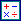
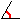
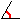

y nómbrelos A y B con ayuda del ícono
y nómbrelos A y B con ayuda del ícono  .
.Construcciones: Ejemplo 1.
Vamos a explicar mediante un ejemplo cómo crear una construcción y utilizarla.
Deseamos crear una construcción que, dados dos puntos A y B y un valor numérico ang creará un triángulo AMB rectángulo en M tal que el ángulo BÂM tenga por medida ang.
Cree una nueva figura con ayuda del menú Archivo - Nueva figura.
En caso necesario, utilizar el menú Opciones - Figura en curso para que la unidad de ángulo de la figura sea el grado (pestaña Unidad de ángulo).
Utilice el ícono  para crear un cálculo nombrado ang que contendrá como fórmula 30.
Cree dos puntos libres con ayuda del ícono y nómbrelos A y B con ayuda del ícono .
Utilice el ícono  para crear el punto medio del segmento [AB].
para crear el punto medio del segmento [AB].
Con ayuda del ícono  creemos la circunferencia de centro en este punto medio y que pasa por A.
creemos la circunferencia de centro en este punto medio y que pasa por A.
Creemos ahora la imagen del punto B por la rotación de centro A y de ángulo ang.
Para ello cliquear sobre el ícono  . Cliquear a continuación sobre A (centro de la rotación) que comenzará a parpadear. Cliquear seguidamente para crear la imagen de B por esa rotación.
. Cliquear a continuación sobre A (centro de la rotación) que comenzará a parpadear. Cliquear seguidamente para crear la imagen de B por esa rotación.
Cliquear a continuación el ícono para crear la semirrecta de origen A y que pasa por este último punto.
Con ayuda de la herramienta de intersección  creemos la intersección de la circunferencia y esta semirrecta. Para eso cliquear sobre la circunferencia y la semirrecta.
creemos la intersección de la circunferencia y esta semirrecta. Para eso cliquear sobre la circunferencia y la semirrecta.
Llamaremos este punto C.
Utilice el ícono  para crear los segmentos [AB], [BC] y [CA] y el ícono  para crear la marca de ángulo recto del ángulo en C.
para crear los segmentos [AB], [BC] y [CA] y el ícono  para crear la marca de ángulo recto del ángulo en C.
Nuestra figura está ahora lista para crear la construcción.
Utilice el menú Construcción - Elección de elementos fuentes - Gráficos. Cliquear sobre A, luego sobre B, luego cliquear sobre el botón derecho del ratón.
Utilice el menú Construcción - Elección de elementos fuentes - Numéricos.
Una caja de diálogo se abre. La lista de la izquierda contiene los elementos de tipo cálculo de la figura que pueden elegirse como elementos fuentes.
Cliquear sobre ang luego sobre el botón Insertar (pueden también pulsar dos veces sobre ang) luego validar.
Nos queda por designar cuáles son los elementos finales de nuestra figura que son en este ejemplo únicamente gráficos.
Observemos que MathGraph32 no permite designar más que objetos finales que se construyen exclusivamente con ayuda de los objetos fuentes.
Utilice el menú Construcciones- Elección de elementos finales - Gráficos.
Cliquear sobre C, sobre los tres segmentos y la marca de ángulo luego cliquear el botón derecho.
Para terminar la construcción, utilizar el comando Construcción - Finalizar la construcción en curso.
Completar la caja de diálogo que aparece como sigue.
.
A tener en cuenta: el nombre no debe implicar caracteres acentuados.
Expliquemos la información entrada para la construcción:
Las tres primeras líneas son información que el usuario tendrá a su disposición en con la tecla F7 en la utilización de la construcción.
Los tres últimos servirán para indicar al usuario cuál es el objeto que debe designar en la implementación de la construcción. Cada indicación se precede del carácter # seguido del número del objeto y de un carácter: (dos puntos).
Atención: En la implementación de una construcción, los objetos no gráficos deben designarse en primer lugar.
Si no la suprimen, esta construcción se registrará con su figura pero es preferible registrarla separadamente sobre su disco duro por ejemplo.
Utilice para eso el menú - Guardar una construcción en un archivo.
Una caja de diálogo se abre presentando las construcciones presentes en la figura. Nuestra construcción está seleccionada.
Cliquear sobre el botón Guardar para registrar esta construcción en el lugar de su elección (se aconseja guardar el nombre de la construcción como el nombre del archivo y evitar los caracteres acentuados)..
Vamos ahora a mostrar cómo implementar esta construcción en otra figura.
Utilice el menú - Nueva figura para crear una nueva figura virgen.
Utilice el menú Cálculos - Variable - Nueva variable para crear una variable nombrada a de valor mínimo - 90, de valor máximo 90, con paso de incremento 10, de valor actual 30 y tildar en la casilla de la Ventana asociada.
Cree dos puntos libres y nómbrelos C y D.
Utilice el menú - Implementar una construcción desde un archivo y abra la construcción anteriormente registrada.
Una caja de diálogo se abre cuyo objetivo es elegir cuál es el valor numérico de nuestra figura que desempeñará el papel del cálculo que habíamos llamado ang (objeto fuente no gráfico).
Cliquear sobre a en la lista propuesta.
Cliquear a continuación sobre los puntos C y D.
En la designación de los objetos fuentes gráficos, un apoyo sobre F7 evidenciará la información de las construcciones.
Se ve entonces aparecer los objetos finales: los tres segmentos, el punto y la marca de ángulo.
cliqueando sobre los botones + y - de la caja de diálogo asociada a la variable se pueden modificar los valores del ángulo.
Observemos que en construcciones más sofisticadas, se pueden también tener objetos finales de tipo cálculo.
Utilizando el historial de la figura (atajo F5) y tildando la casilla Traza en construcciones se podrá ver cómo se creó nuestra figura.
Los objetos intermediarios no pueden utilizarse para crear otros objetos, salvo si utilizan el menú Construcciones - Fusionar las construcciones de la figura.
Una observación importante:
Normalmente, los puntos libres no están destinados a convertirse en objetos finales. Pero en algunos casos, eso puede ser útil.
Para que un punto libre sea un objeto final, proceder de la siguiente forma:
Elegir el punto libre como objeto inicial, esto es lo que permite elegir los objetos finales construidos con este punto. Elegir también este punto libre en los objetos finales (se les pedirá una confirmación). Su punto libre será entonces un objeto final.
Este método puede tener un inconveniente para una construcción destinada utilizarse varias veces en la misma figura. Ya que habrá entonces varios puntos libres situados en el mismo lugar.
Copyright © <2009>, <Yves Biton>
Created with the Freeware Edition of HelpNDoc: Easily create Web Help sites